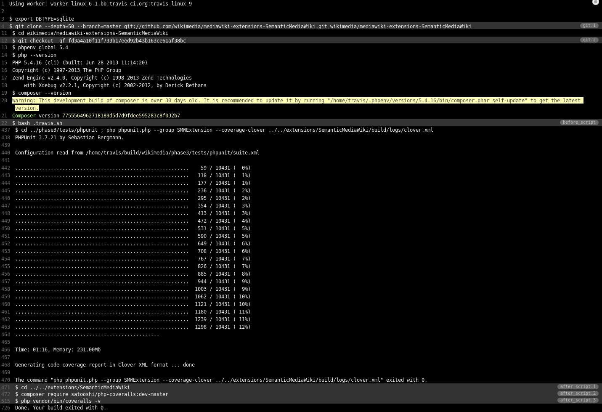

Yearly LolCats overview
Caturday will not be stopped!

Yearly SMW overview
Presentation by @JeroenDeDauw
bit.ly/2013-smw
Overview
- Development
- Infrastructure
- SMW 1.8
- SMW 1.9 / roadmap
Contributors
~20 developers, 68 total
"Large, active development team", top 10%
Maintainers: Markus Krötzsch, James Hong Kong & Jeroen
Commits
~1000 commits
 "Stable Y-O-Y development activity"
"Stable Y-O-Y development activity"
Lines of code
41k => 58k
 "Mature, well-established codebase"
"Mature, well-established codebase"
Infrastructure
Continuous integration
Tests running on Jenkins

Jenkins integration with Gerrit

TravisCI!


Coveralls.io support
Status badges
Composer support!
Packagist